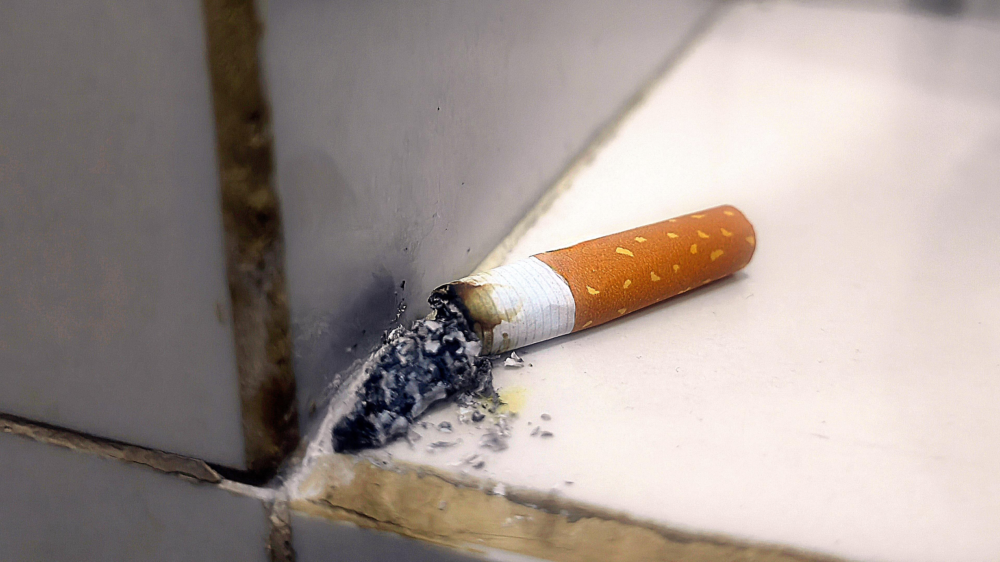

1 av 5

Vilka arbetsmiljörisker ser du här?
Visa riskerna
Brandrisk och ohälsosam luft
Frågor i formuläret som rör dessa risker:
Fråga 7: Finns förhöjd risk för brandincidenter hos kund?
Fråga 10. Finns andra faktorer som påverkar arbetsmiljön (till exempel rökning, husdjur)?